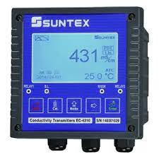

EC-4110-RS
Features:
- 96 x 96mm Intelligent conductivity/resistivity transmitter
- Waterproof and dustproof design
- Compatible with conductivity or resistivity measurement
- Compatible with 2- or 4-electrode conductivity cell
- User-friendly operation with text and graphic illustration, clear signs and easy to understand
- LCM graphic display with auto-sense backlight and contrast setting function
- With password and multi-key design-security protection enhancement
- Automatic temperature compensation with NTC30K or PT1000
- With password and multi-key design-security protection enhancement
- Automatic temperature compensation, NTC30K or PT 1000 selectable
- Fine tuning of product adjustment function ensures high accuracy
- Temperature coefficient compensation by non-linear or linear
- Hi/Lo, Hi/Hi, Lo/Lo selectable two limited contact outputs with programmable set-points and hysteresis
- Gradually continuous sample measurements average function to enhance stability
- Automatic sensor clean function with programmable time interval
- LED indicated alarm or washing status signal
- IP 65 (NEMA 4X), CE approved

EC-4110-RS only:
- Measured values can be selected for figure or chart display
- Trace mode can display historical measured value curve from 3-minute to 4-week program
- Equipped with events logbook function
- Equipped with one analog output and RS-485 interface
- RO System
- Cooling water
- Industrial process
- Pure water
- Boiler water
- Water treatment